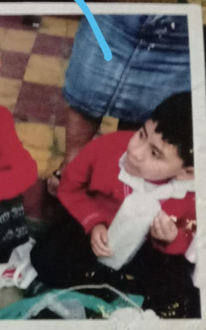

Mi Historia Familiar
Mi nombre es Jelson José Sicay López. Nací un 23 de marzo de 2004 en el Hospital Roosevelt de la Ciudad de Guatemala, en el seno de una familia trabajadora y unida. Mis padres, José Sicay Gonzales y Marta Eugenia López Xon, me han guiado con valores firmes como el respeto, la fe, la responsabilidad y la prudencia. Ellos no solo me dieron la vida, sino también el ejemplo de esfuerzo y dedicación diaria.
Soy el menor de mis dos hermanos mayores y una hermana menor: Erick Sicay, Edsson Sicay y Alison Sicay. Al crecer con ellos, ha sido una experiencia enriquecedora. Cada uno de ellos me ha enseñado algo distinto, ya sea a través del juego, el estudio o simplemente compartiendo los momentos cotidianos en casa.
Mi familia es mi primer refugio, el lugar donde aprendí a convivir, a amar y a respetar. Desde pequeño, me inculcaron principios que aún me guían, como ayudar al prójimo, ser honesto y nunca rendirme ante los retos.
Hoy, valoro profundamente el papel de mi familia en mi formación como persona. Son ellos quienes han sembrado las bases de lo que soy y quienes me inspiran a construir un futuro donde pueda retribuirles todo lo que han hecho por mí.
Niñez
Mi niñez comienza el día que nací, el 23 de marzo de 2004, en el Hospital Roosevelt. Comencé a caminar a los tres años y, después de un tiempo, comencé a hablar. Fui querido por mis hermanos y mi padre. Los momentos que pasaban conmigo eran llenos de juego, al igual que con mis primos, tías y tíos. Jugaba a las escondidas, a los cinco, tazos, trompos y también con carritos. Siempre fui feliz; nunca me faltó nada en mi niñez.
Adolescencia
En mi adolescencia lo pasé bien. Tenía mis amigos y quedábamos para jugar a la pelota y platicar. Nos reuníamos para salir a pasear en bicicleta o ir a salas de videojuegos a jugar un rato. Fue muy divertido hacer esa clase de actividades porque podía experimentar cosas y tomar mis propias decisiones. Algunas fueron buenas y otras malas, pero de esas experiencias fui más consciente en la toma de decisiones y la prudencia que conllevan. Gracias a ello, soy la persona que hoy en día se enorgullece de lo que es.

Académico
Comencé a estudiar desde los 5 a 6 años en pre-kínder y kínder en la Escuela Párvulos Lo de Coy, donde aprendí cosas nuevas y hice amigos. Normalmente hacían actividades como actos cívicos sobre varios temas como el Día de la Mujer, el Día de la Independencia o bailes típicos.
En la Escuela Primaria Mixta 835 Lo de Coy, estudié desde los 7 hasta los 12 años. Participé en varias actividades como bailes típicos, mercaditos y actividades como llevar la antorcha a Antigua Guatemala, que fue la primera vez que hice ese tipo de actividades. Conocí personas que se hicieron mis amigos durante ese tiempo.
A los 13 a 15 años, estudié en el Colegio Fe y Alegría No. 6. Participé en bailes de independencia, talleres de cocina, obras de teatro y convivencias. Conocí muchas personas con quienes jugábamos fútbol o salíamos a conocer diferentes lugares de Mixco.
Desde los 16 a 18 años, estudié en el Colegio Italiano de Guatemala. Al principio no conocía a nadie y me costó adaptarme. Aprendí electrónica y, con el tiempo, fui entendiendo nuevas materias. Participé en ferias científicas y de matemáticas, y en campeonatos de fútbol. Durante la pandemia, tuvimos clases virtuales, luego volvimos a la presencialidad donde realizamos proyectos con Arduino, sensores, LEDs, resistencias, etc. Aprendí habilidades que hoy en día aplico.
Ver video de armado de circuito conponentes Electronicos
Sobre Mi Persona
Soy amable, tolerante y paciente. Me cuesta controlar mis nervios al hablar en público. Me gusta la tranquilidad y no me agradan las multitudes. Prefiero lugares naturales y tranquilos.
Metas
- Corto plazo: Graduarme, obtener buenas notas, mejorar como persona y aprender un instrumento.
- Mediano plazo: Dominar un idioma, tener un trabajo estable y ser independiente económicamente.
- Largo plazo: Tener casa propia, un negocio, una familia, viajar y vivir cómodamente.
Mis Pasatiempos
Me gusta jugar videojuegos, escuchar música, jugar fútbol y ver películas.
Deporte que me gusta
Mi deporte favorito es el fútbol.
Lo que me gusta
Me gusta la tranquilidad, la honestidad y compartir con personas cercanas, así como salir a caminar por lugares con árboles y vegetación.